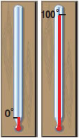

Για να βαθμολογήσουμε ένα θερμόμετρο ακολουθούμε μια συγκεκριμένη μέθοδο: Το αφήνουμε στον πάγο αρκετή ώρα και στο σημείο που θα σταθεί ο υδράργυρος σημειώνουμε το μηδέν (0°). Στη συνέχεια το αφήνουμε μέσα σε νερό που βράζει και στο σημείο που θα σταθεί ο υδράργυρος σημειώνουμε το εκατό (100°).
|
 |